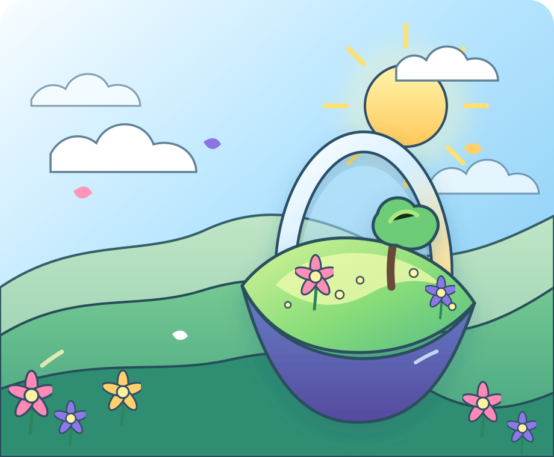

01
Listen
Begin with a real day, not a feature list.
The first step is understanding routines, frustrations, environments, and goals from the people who would actually use the technology.
Equal Horizons explores assistive technology that is more affordable, accessible, and grounded in how people actually live.
Built with community,
not assumptions.

Accessibility should feel like an open landscape—not a locked door.
Scroll to explore01 / WHY WE EXIST
Too many assistive tools are expensive, hard to find, difficult to customize, or designed without enough input from the people expected to use them.
Equal Horizons is starting with listening, research, and small prototypes. The goal is not to promise finished answers—it is to learn responsibly and build better questions with the community.
02 / HOW AN IDEA MOVES
Scroll through the process. The scene changes as each step moves the idea closer to something useful.
Listen
Listen
The first step is understanding routines, frustrations, environments, and goals from the people who would actually use the technology.
Shape
Instead of designing a giant solution at once, we narrow the problem and make the smallest useful concept that can start a meaningful conversation.
Build
A prototype is judged by more than novelty. It has to consider affordability, repairability, clarity, and whether it fits naturally into daily life.
Learn
Early-stage work should stay honest. Feedback and open learning help the next version become more useful without pretending the answer is already finished.
03 / AREAS OF EXPLORATION
Each direction is clearly labeled because honest early-stage work should show what is known, what is being tested, and what remains open.
An early-stage concept for lightweight visual, audio, and navigation support built around affordability and real daily routines.
Explore direction ↗Exploring interfaces that bridge text, sound, gesture, and visual communication without forcing people into one rigid workflow.
Explore direction ↗Investigating modular parts, open designs, and student engineering approaches that could lower barriers to useful assistive devices.
Explore direction ↗04 / STUDENT-FOUNDED
Co-Founder · Research and product thinking
Co-Founder · Partnerships and responsible growth
THE NEXT HORIZON
Equal Horizons is looking for mentors, collaborators, volunteers, and people willing to share thoughtful accessibility feedback.